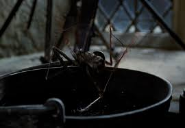

Popular Spells

Expelliarmus
A defensive spell used to disarm an opponent by forcing whatever they are holding
out of their hand. It is one of the most iconic spells used by Harry Potter.

Lumos
Creates a beam of light from the tip of the wand. It is widely used by witches
and wizards to navigate dark environments safely.

Accio
A summoning charm that allows the caster to call objects toward them, even
from a distance, making it extremely useful in many situations.
Forbidden Spells (Unforgivable Curses)

Crucio
Also known as the Cruciatus Curse, it inflicts intense and unbearable pain
on the victim. It is considered one of the most dangerous dark spells.

Avada Kedavra
The killing curse. It causes instant death without injury and cannot be blocked
by most magical means. It is the most feared spell in the wizarding world.

Imperio
Allows the caster to completely control another person's actions, removing
their free will. It is strictly forbidden due to its ethical implications.